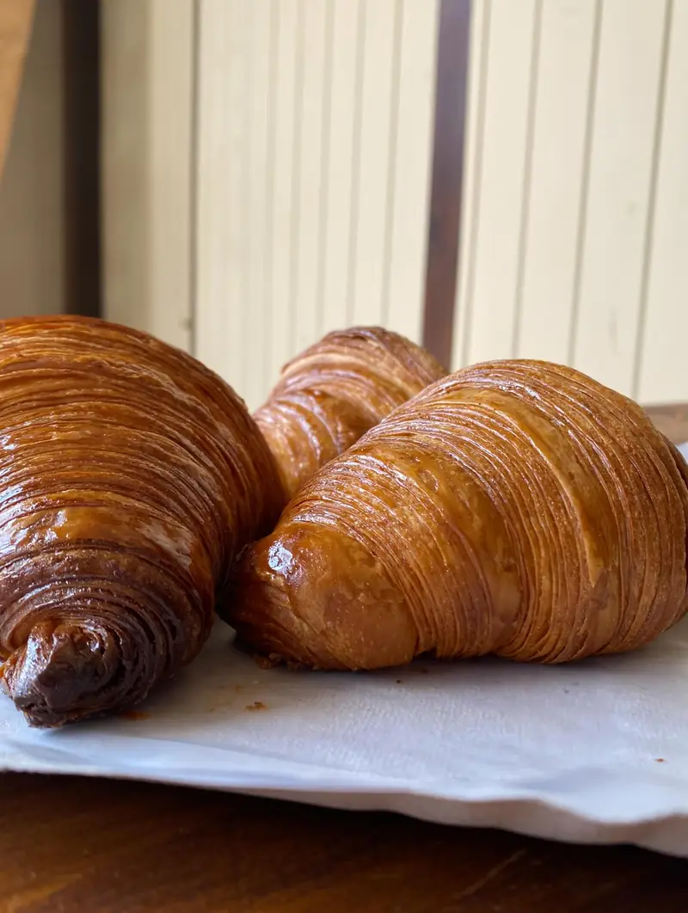
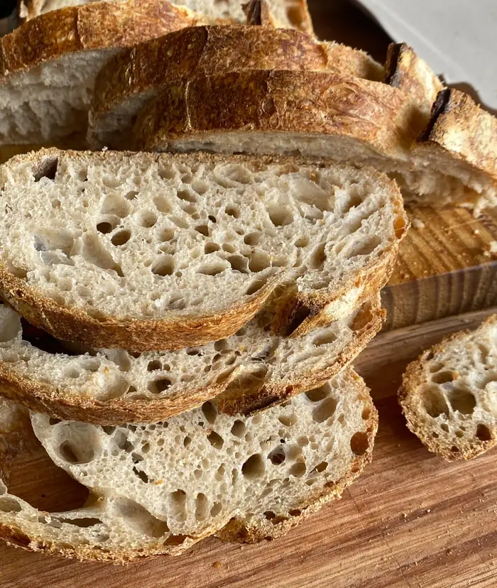
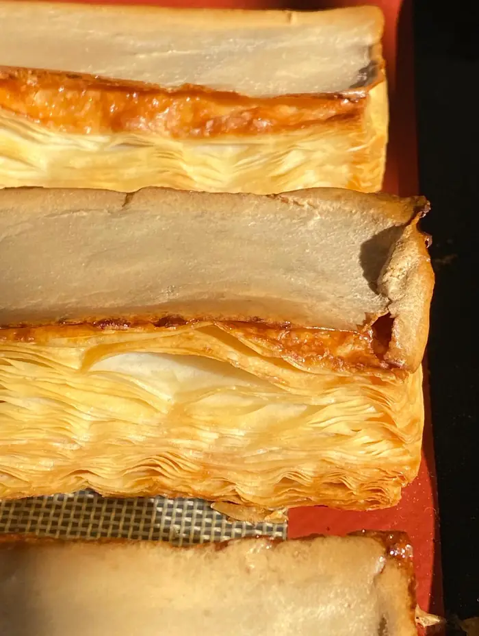
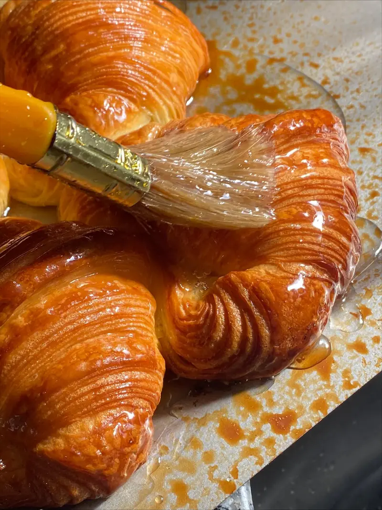
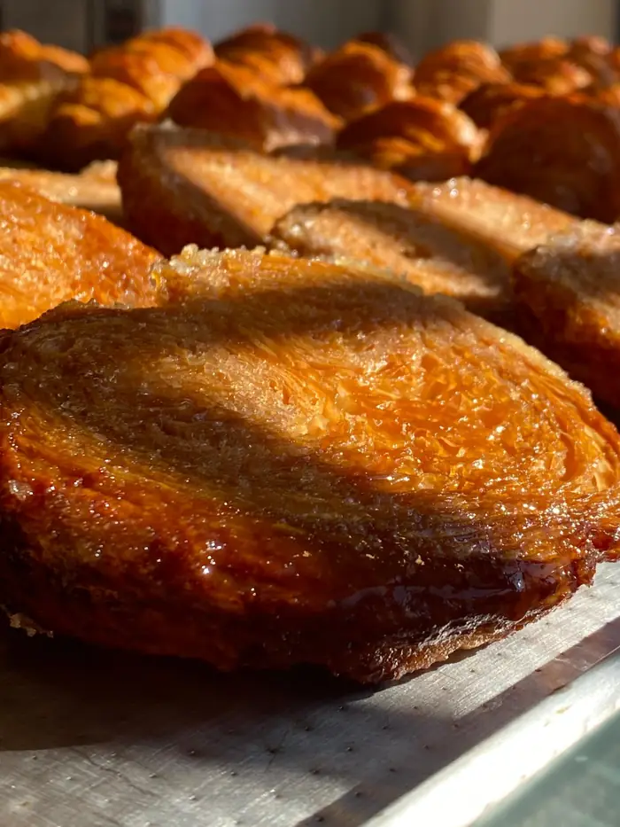
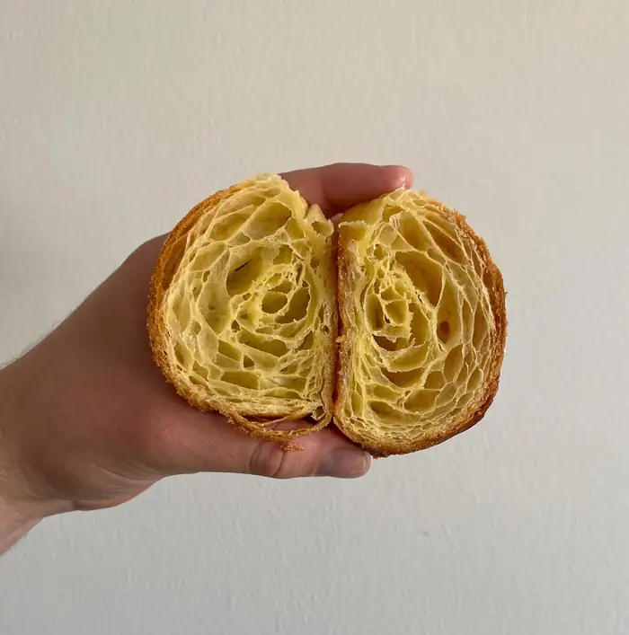

pan de masa madre · laminados · café de especialidad
Masa madre y laminados, hasta agotar stock.
Mirá en vivo qué queda en la bandeja, guardate el tuyo para retirar y encargá tu torta.
Martes a sábados 8:30 a 18:00 hs · Av. Congreso 3201

- medialunas
- croissants
- danesas
recién salido del horno
La bandeja de hoy
Lo que salió del horno y cuánto queda. Tocá una pieza y te la guardamos para retirar.
Ciciliano carga la horneada cada mañana desde su panel y cada reserva descuenta.Probá el panel del dueño
todo lo que sale del horno
La carta
Una sección por vez. Lo que tiene stock lo podés guardar para retirar hoy; los precios te los confirma el local.
Esta carta también vive en su propia página, la del QR del mostrador: se actualiza sola cuando Ciciliano la edita.
mientras más capas, mejor
Tortas por encargo
Elegí la torta y el día de retiro. Ciciliano te confirma precio y tamaño por WhatsApp. Se encargan con 48 hs.
Para el finde y para regalar
Docenas, cajas armadas y lo de las fiestas, para retirar el día que elijas.
tiempo y materia prima
Cómo lo hacemos
-

Masa madre
Fermentación natural: más sabor, corteza crujiente y más nutrientes. Harina orgánica en el pan de campo.
-

Manteca de verdad
Medialunas 100% manteca y hojaldre crocante, capa sobre capa.
-

El tiempo justo
“El secreto de una medialuna perfecta está en el tiempo y la materia prima.”
-

A la vidriera
Sale del horno y va a la bandeja de hoy. Cuando se termina, se terminó: hasta agotar stock.
Contá las capas
Arrastrá la línea sobre la medialuna abierta.
capas de manteca

El barrio ya lo sabe
Coghlan le pone 4,8 sobre 5. Las reseñas completas, con su puntaje, están en Google Maps.
Leer las reseñasdesde la vereda
Visitanos
Av. Congreso 3201, Coghlan, CABA
- Martes8:30 a 18:00 hs
- Miércoles8:30 a 18:00 hs
- Jueves8:30 a 18:00 hs
- Viernes8:30 a 18:00 hs
- Sábado8:30 a 18:00 hs
- Domingo8:30 a 16:00 hs
- LunesCerrado
o hasta agotar stock